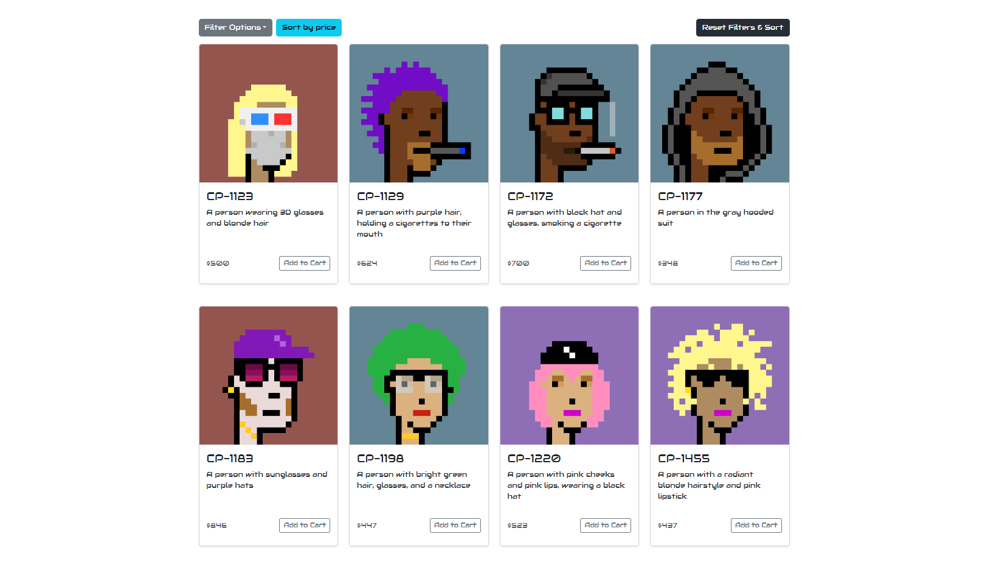
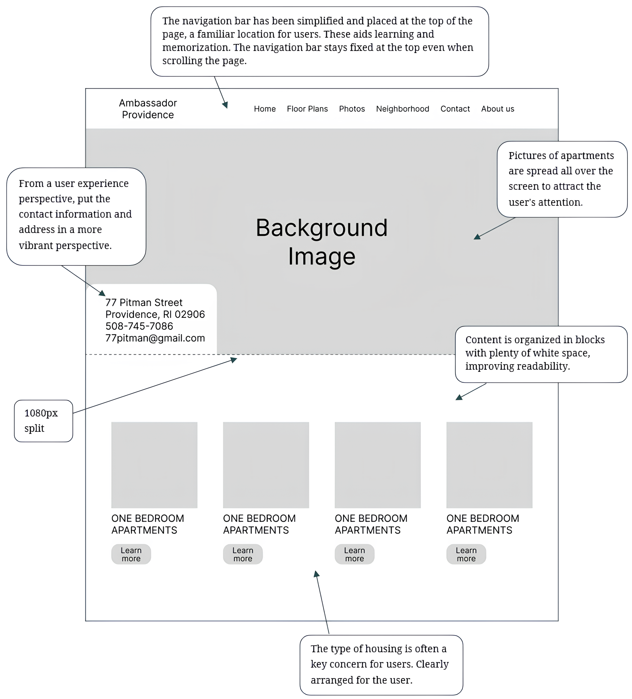
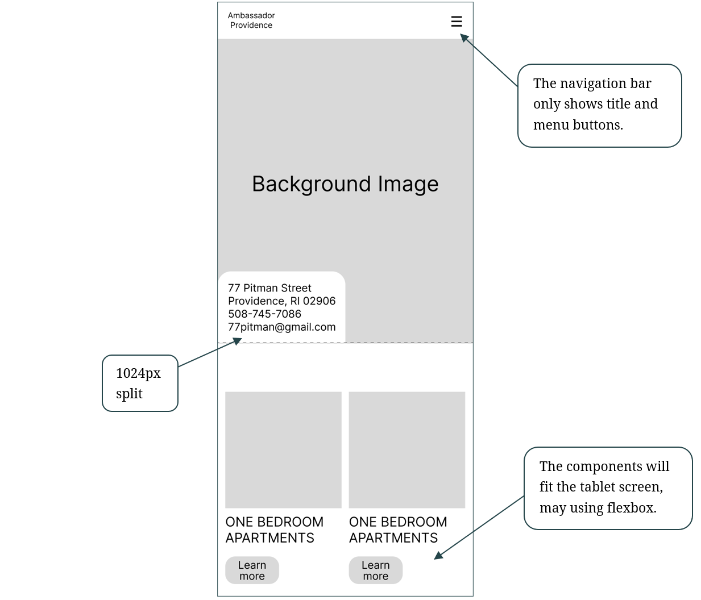
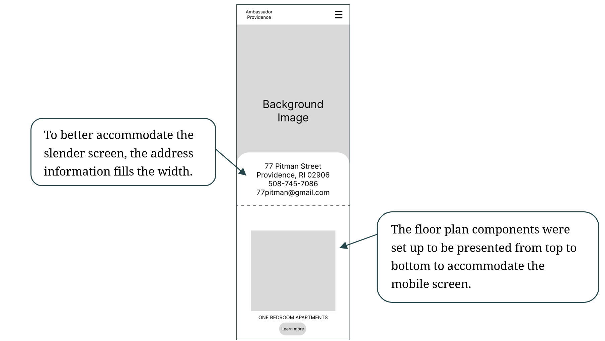
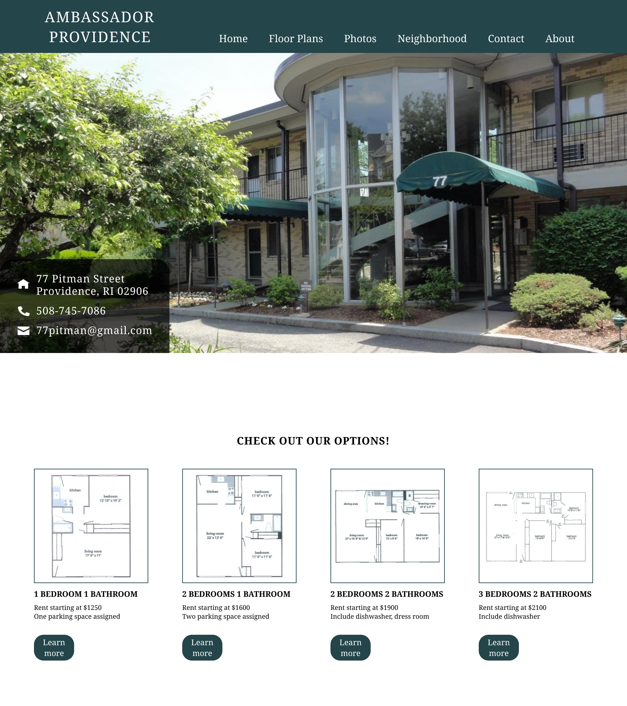
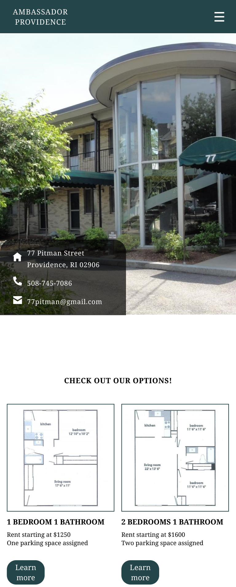
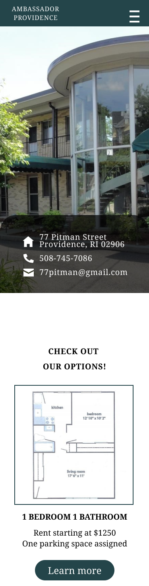
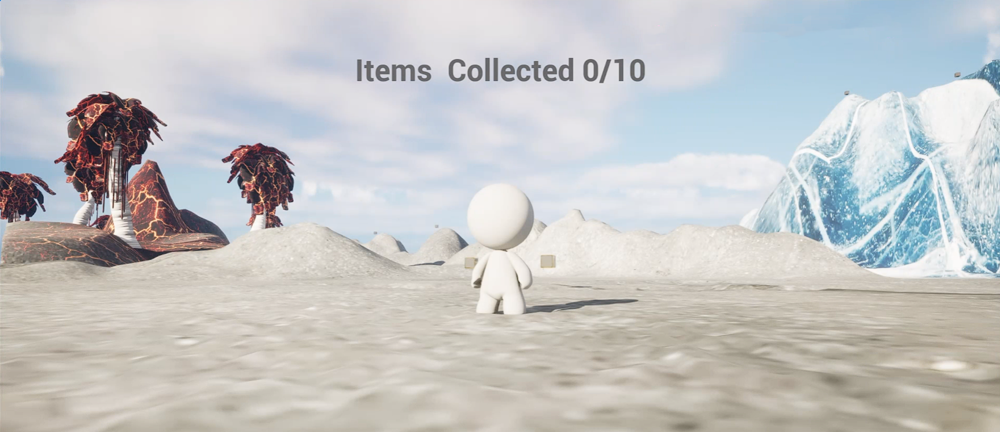

Hello! I'm Shiyu.
I'm a software engineer with a passion for exploring human-computer interaction in robotics. Currently working as a research assistant at Humans To Robots Laboratory. Start a chat via email!
Explore More

Responsive Redesign
Exploring usability issues of apartment's page highlights the significance of design in user experience.

Cryptopunks Shop
An exploration and analysis of various competitive web platforms equipped with aggregators.
Devvy The Way Home
Treasure hunting among volcanoes and glaciers. 3D platforming game - Unreal Engine 5

Photo Maniac
Jump to view my photography works!
photography
about
Responsive Redesign of the Ambassador Providence Website
UI/UX Design
Web Development
Problem
The Ambassador Providence website suffered from usability issues that hindered user engagement. The site was not optimized for various devices, leading to poor visual hierarchy, layout confusion, and accessibility concerns. These problems detracted from the site's overall effectiveness and accessibility.
Research
To address these issues, I conducted a thorough analysis of the existing website using tools like WebAIM WAVE to identify specific usability problems. This included evaluating the visual hierarchy, layout, navigation, and accessibility features.
Process
My redesign process began with quick sketches to explore various layout and navigation improvements. These sketches evolved through several iterations, reflecting feedback and further research, into detailed wireframes for each major screen size (desktop, tablet, and phone). Each step was documented with annotations to explain how the changes addressed the identified usability issues.

Desktop

Tablet

Phone
Solution
The final design was presented in high-fidelity wireframes, which included detailed components, backgrounds, and color schemes tailored to each device type. This redesign not only enhanced the aesthetic appeal but significantly improved functionality and user experience across devices. Shown as high fiedlity wireframes below.



Learnings
This project highlighted the importance of responsive design in modern web development. Key learnings include the critical role of initial research in identifying usability issues, the effectiveness of iterative design in addressing user needs.
Developing a User-Centric Shop for Cryptopunks
React
Competitive Analysis
Problem
The digital art market, particularly Non-Fungible Tokens (NFTs) like Cryptopunks, has seen explosive growth. However, existing platforms often lack intuitive and user-friendly features that engage users. This project aimed to address these shortcomings by creating a Cryptopunks Shop that combines art and commerce in a user center experience.
Research
In the initial stages, I analyzed competitive web platforms such as Spotify, Amazon, and Airbnb to identify key features that drive user engagement. This competitive analysis revealed insights into:
| Factors / Website | Spotify | Amazon | Airbnb |
|---|---|---|---|
| Social Features | ✓ | ✕ | ✕ |
| Shopping Efficiency | ✕ | ✓ | ✕ |
| Ease of Use | ✕ | ✕ | ✓ |
Process
Starting with quick sketches to visualize the layout and interface, I iterated on designs based on feedback and technical feasibility. These findings helped pinpoint essential functionalities that could enhance the Cryptopunks Shop. The final design of the Cryptopunks Shop features:
- One-click Add to Aggregator: Inspired by Airbnb, allowing users to effortlessly save their favorite NFTs.
- Visible and Accessible Aggregator: Modeled after Amazon’s always-visible shopping cart, ensuring easy access.
- Direct Delete Option: Simplifies item removal, enhancing the user experience.
Solution
The high-fidelity mockups showing the detailed design for desktop and mobile views. These mockups encapsulate the visual and interaction design, focusing on ease of use, appeal, and functionality. Please jump to the full site to view!

Learnings
This project underscored the importance of understanding user needs and industry standards. Specially, a streamlined shopping experience is necessery. I got a chance to complete synthesizing competitive insights, crafting the user experience, and translating these into a functional and aesthetic interface using React.
Developing a 3D Game Called Devvy The Way Home
Unreal Engine 5
3D Modeling
Introduction
The gaming industry is continually evolving, with players seeking more engaging and interactive experiences. The challenge was to create a game environment that not only looks visually appealing but also offers complex interactive mechanics that are smoothly integrated with the character's movements and the game's physical elements.
Research
I delve into the development of an interactive gaming environment utilizing Unreal Engine’s Blueprint scripting and C++ programming. The project was aimed at enhancing player engagement through dynamic character mechanics and immersive landscapes. Prior to development, I conducted a study of current trends in game design, focusing on popular action and adventure games. Inspiration was drawn from titles like The Legend of Zelda: Breath of the Wild for its open-world exploration and Super Mario Odyssey for its innovative movement mechanics.
Process
Implementation of Character Actions by Blueprint Scripting: Actions such as Walk/Sprint, Double Jump, and Wall Jump were implemented using Unreal Engine's visual scripting system, Blueprint. This allowed for rapid prototyping and testing of character mechanics.


Construction of the Scene: The game features diverse landscapes, including snowy mountainous areas and perilous lava terrain. These were modeled and textured to provide varying challenges and aesthetics.
Interactive models Collision Mechanics: such as obstacles and enemies were placed in the environment. Using C++ programming, I developed a system to track collisions that enhance gameplay by challenging the player and providing feedback.
Solution
The integration of advanced character mechanics with a textured environment resulted in a interactive and engaging game. The final product was showcased through a gameplay video demonstrating the interaction of the character with the environment, highlighting the responsive mechanics and graphics.

Learnings
Throughout this project, I enhanced my skills in both Blueprint scripting and C++ programming. I learned the importance of iterative design and testing, particularly in a complex system where multiple elements must interact smoothly.